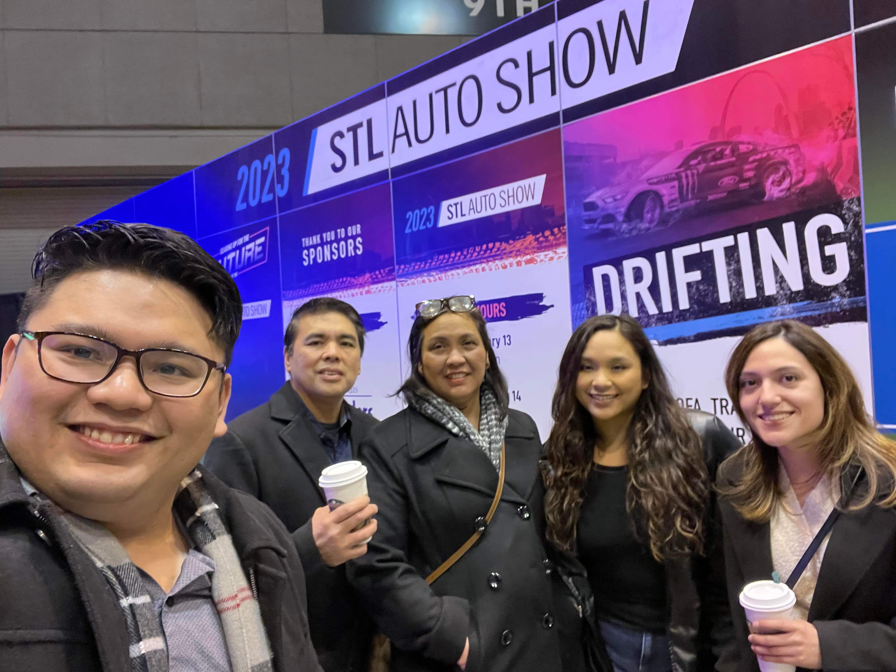
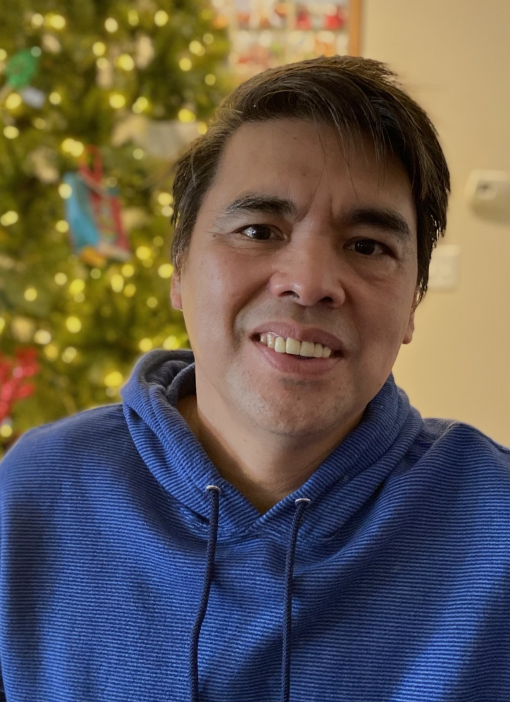
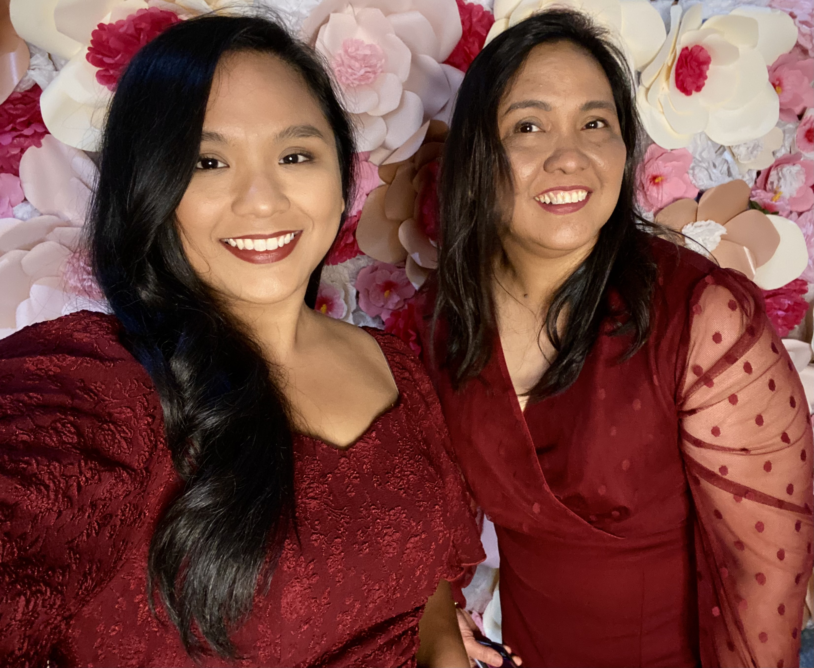
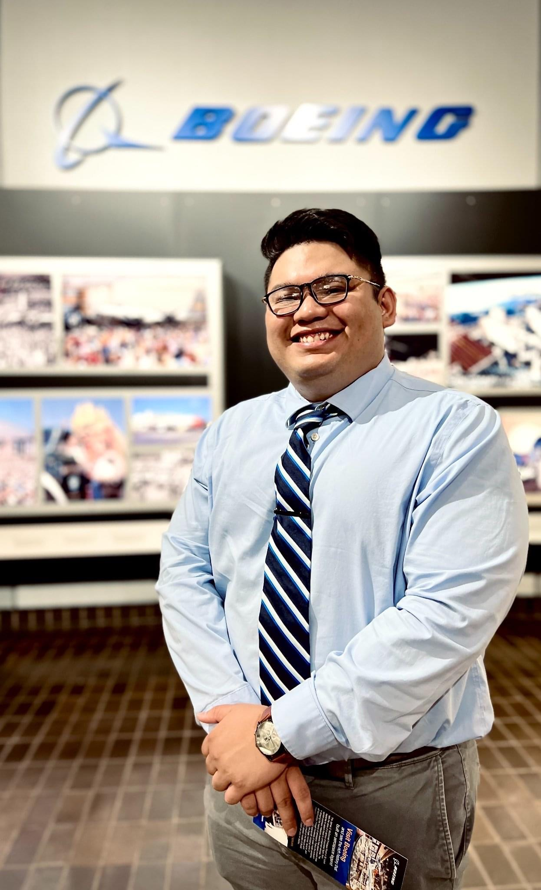
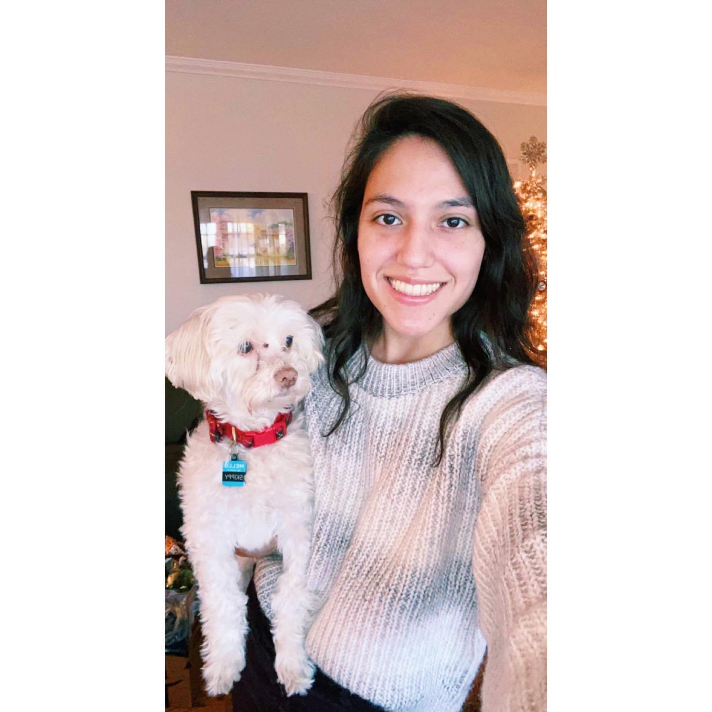
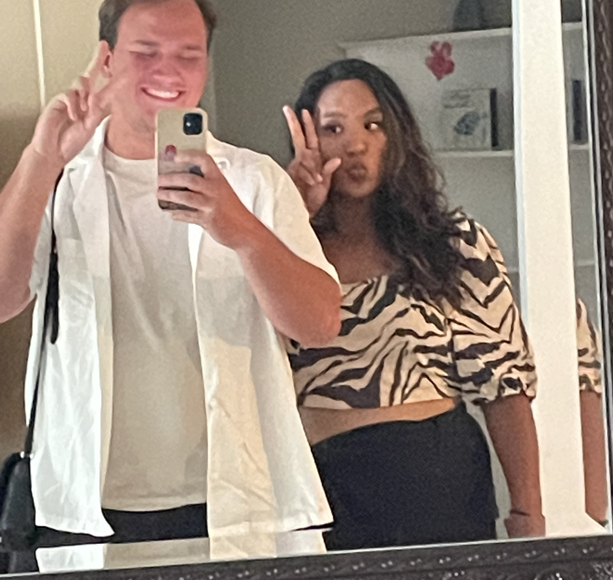
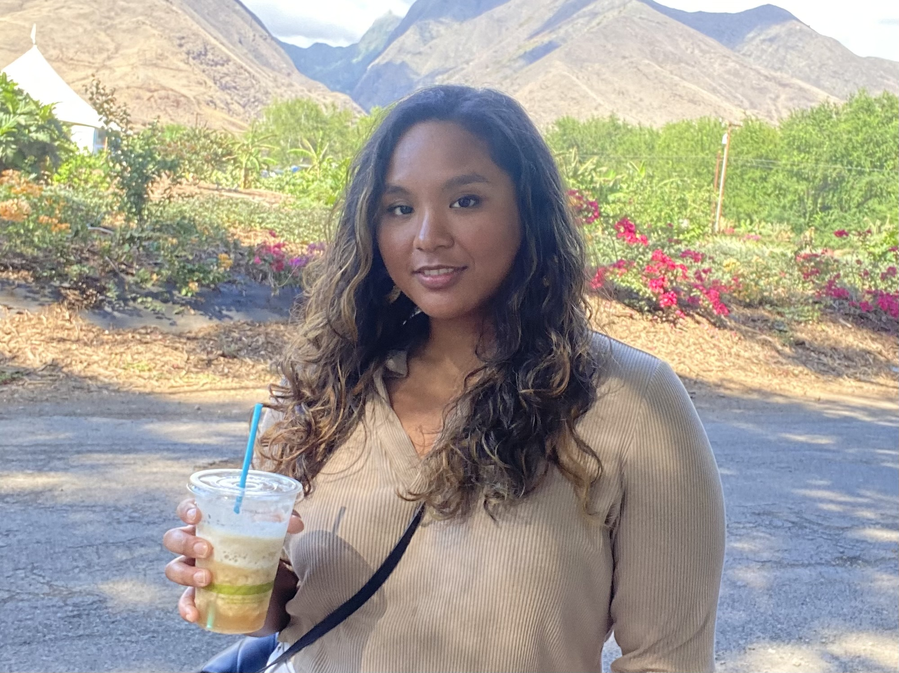

Car show in Saint Louis, MO with my family
Welcome to my page! In tagalog we say, "Mabuhay!" The next few photos showcase the most important people
in my life and some information I wanted to share about them.
My Dad: Samuel

Occupation: Self-Employed Engineer
Hobbies & Interests: Cooking, Home Improvement, and Story-telling
My dad, Samuel is incredibly hard-working, intelligent, and strong-willed.
His hobbies of home improvement and cooking show how much the quality of life at home
is important to him. My dad spent his early years in an island in Polillo, Philippines. Growing up
with very little, school was very hard for him. Books, school uniforms, and lunches were
usually out of reach which is why he strived to do well in school and eventually become an engineer.
Fortunately, his hard work showed with the opportunity to move to the United States to fulfill
his American Dream. Eventually, passing the dream onto his children, my Brother and I.
My Mom: Lani

Hobbies & Interests: Candy Crush, Shopping, and Singing
My mother, Lani is hard-working, young-spirited, and gentle. I don't think I've ever seen
my mom actually angry. She has a soft and gentle spirit but also young at heart. She loves travelling
and exploring like me. I'd say she's more adventurous than me, especially at her age. I even saw her
try longboarding without fear! My mom is also a great nurse, she's been at her same profession even
before I was born. I don't think she's ever thought of switching careers, even though I know how
hard nursing as a profession can be.
My Brother: Clarusse

Clarusse posing at Boeing, his dream job
Occupation: Engineer at Boeing
Hobbies & Interests: Video Games, Sports Cars, and Boba Tea
My Brother Clarusse is intelligent and curious. Ever since I was little, I remember
my brother getting into different types of hobbies. From solving rubix cubes, dice-stacking,
and now sports cars. He was always into the finer things in life and I just happen to use him as my
google reviews when I need to buy something new. All of my computer parts came from him and he showed me
how to build my very own PC. Sometimes I think he should've been the software engineer! Even though,
he absolutely loves his job right now as an Engineer for Boeing. Growing up, my brother became my
best friend and everyday I am proud to tell people that he's my brother.
My Bestfriend: Grace

Occupation: Nursing Student
Hobbies & Interests: Animals, Coffee, and Video Games
My bestfriend Grace is stylish, funky, and compassionate. Grace has a deep love for all things animals.
One of her favorite animals is the highland cow. Currently, she lives with a bunny, a dog, and a cat.
As a nursing student, not only is she compassionate about animals but people as well. She takes great
care of those around her and just has a general concern that's unending. Grace and I met at 2016 and
she also happens to be my Brother's girlfriend. I love having her around because we can talk forever
and she has turned into family.
My Boyfriend: Montana

Mirror photo with Montana in Hawaii
Occupation: Ground Operations Agent
Hobbies & Interests: Watching Anime, Video Games, and Playing Board Games
Montana is the most caring, funny, and strong-willed guy I know. He absolutely loves little cute items
and trinkets. I would attribute that to his love of anime. While I worked with him I realized how
fast he learned new things. Montana is also very physically strong and I was quite impressed.
Now, I'd like to share how we met.
My boyfriend Montana and I have been dating for almost a year now. Him and I met when I worked
at Southwest Airlines where we were hired into the same group. Furthermore, we bonded over complaining about
work and playing video games. We found ourselves talking over the phone until 5 in the morning. Even
my very first phone call with him I talked to him until 2 a.m.
We started off as good friends and
I realized I liked him more than a friend, thankfully, he felt the same way. Shortly after our trip to
Hawaii as friends, we became a couple. The picture attached is of us as friends in Maui, Hawaii.
Me: Camille

Hobbies & Interests: Video Games, Cooking, Travel, and Singing
Hey its me, Camille! First, I'd like to share where I started. I'm originally from the island of
the Philippines. Moving to the United States at an early age was a big change in my life. The culture, language, and
the food was different. I turned to music when I had anxiety being in a new country. I poured
a lot of my time into learning the violin, singing, guitar, and piano. My family thought I had
a crazy musical talent, but it was all actually just to ease my anxiety and stress! Anyways, I
also found a new love for computer video games. I love learning new strategies on online multiplayer
games like Overwatch and Dead by Daylight. I'd like to attribute my inclination for video games with
joining LaunchCode as well. Hopefully, one day I'll get to work on video games or applications.